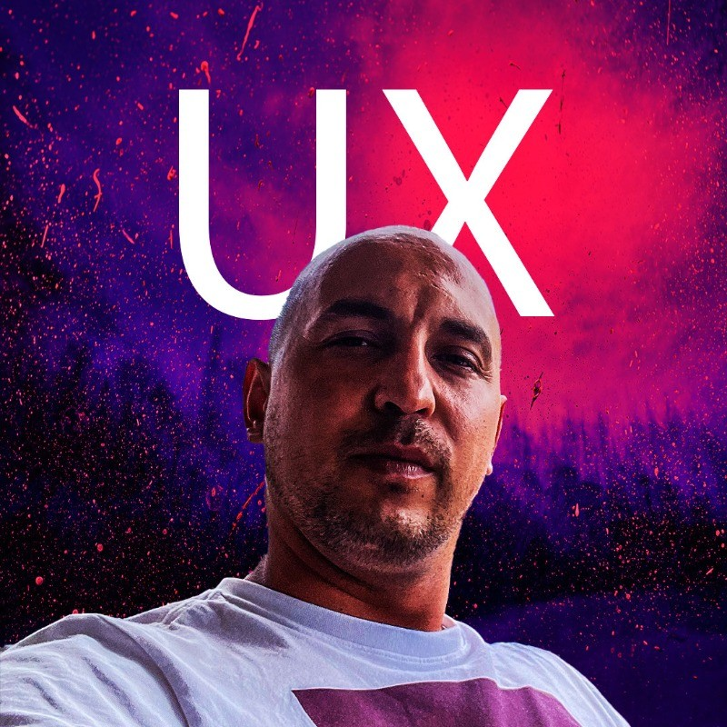
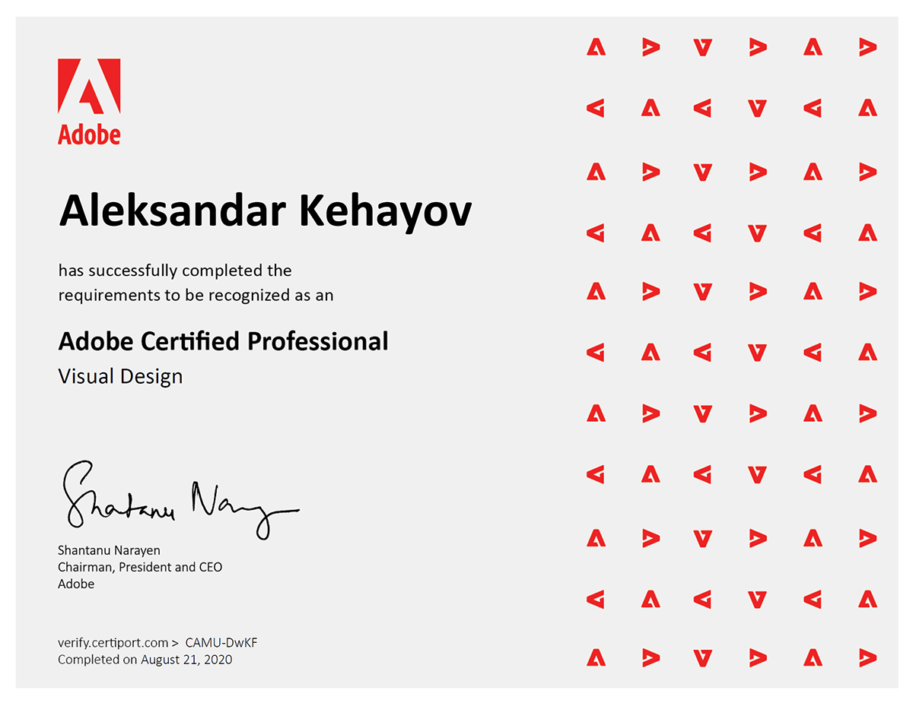
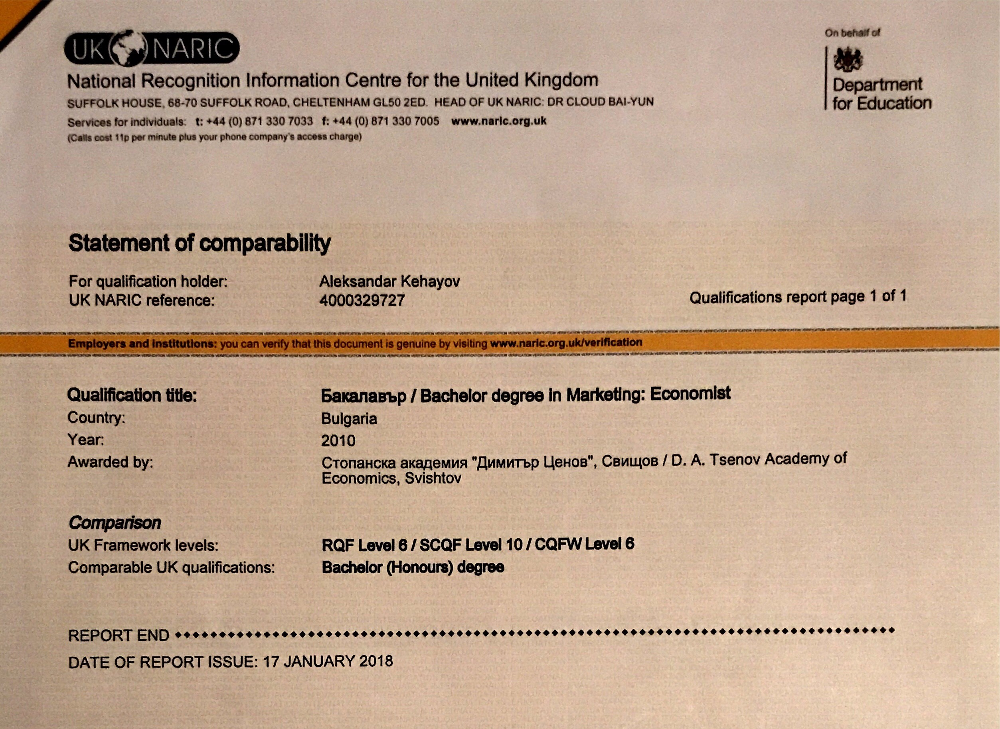

Alexander Key Resume

What i do
Iam British - Bulgarian who specialize in providing state-of-the-art UX design and digital marketing solutions.
With my expertise in crafting user-centric interfaces and a strong foundation in visual design, I can create
exceptional
experiences for your target audience. Whether it's responsive web design, intuitive user interfaces, or engaging
digital marketing
campaigns, I have the skills and knowledge to deliver outstanding results that drive meaningful engagement and
conversions.By leveraging
the latest industry trends and technologies, I ensure that your website or app stands out among the vast sea of
competitors.
Together, we can elevate your online presence and create a lasting impression on your users.
Education

-
UX/UI Design
- Professional Certificate in UI Design (2022): Specialized in user interface design,
this certificate emphasized visual design principles, interactive design, and creating intuitive,
visually appealing interfaces for digital platforms.
- Professional Diploma in UX Design (2021): Focused on user experience principles, this diploma
encompassed research
techniques, user-centered design methodologies, and practical applications in creating effective UX
strategies.
- Google UX Design Specialization, Coursera (2021): Gained practical skills in UX design including
user research,
prototyping, and designing high-fidelity interfaces, underpinned by Google's framework for creating
user-centric digital products.
- Figma UI UX Essentials (Oct 2022): Mastery in utilizing Figma for UI/UX design essentials.
- Design Rules: Principles & Practices for Great UI Design (May 2022): Comprehensive understanding of
key UI design principles and practices.
- Information Architecture (May 2022): Skills in structuring and organizing information effectively
for user interfaces.
- The 90-Minute UX Audit + UI Redesign (May 2022): Expertise in conducting quick UX audits and
redesigning UI for improved user experience.
- UX Requirements Made Simple (May 2022): Proficiency in simplifying and defining UX requirements for
projects.
- Enterprise Design Thinking Practitioner (Sep 2021): Trained in IBM's approach to design thinking in
enterprise settings.
-
Adobe Certified

- Visual Design (Photoshop): Expertise in Adobe Photoshop for visual design projects.
- Print & Digital Media Publication (InDesign): Skills in creating publications using Adobe InDesign.
- Visual Design: Advanced training in visual design principles.
-
Marketing

- Level 3 Digital Marketing, United Kingdom: Enrolled in this program to refresh and update my
marketing skills.
This course is an opportunity to stay abreast of the latest digital marketing trends and techniques,
ensuring my
approach remains relevant and effective in the ever-evolving digital landscape.
- Bachelor's Degree in Marketing, Academy of Economics "D.A. Tsenov" - Gained comprehensive knowledge
in SEO, brand management, consumer
behavior, and marketing strategies, solid foundation in the principles and practices of
marketing.(2006-2010)
-
Web Development & Web Design

- The Complete 2023 Web Development Bootcamp (undertaking)
- Master's Degree in Web Technologies & Software Development (undertaking)
- Web Technologies and Web Design, Academy of Economics "D.A. Tsenov" - Specialized in Web Page and
Multimedia Design.
Key areas of focus included Web Design with Dreamweaver 3, Adobe Flash, and proficiency in Adobe
Studio 8. (2007)
Experience
-
UX Consultant at Now-U, UK
UI/UX Integration: Guided the team to merge UI design with UX research, ensuring designs are user-centric
and research-driven.
Team Leadership: Educated the team on the significance of UX research in creating meaningful designs.
Project Enhancement: Contributed to shifting the focus from purely visual to comprehensive user-centric
design, elevating the quality and impact of our projects.
-
Ui/Ux Designer at Fiverr, UK
Smart ship hub 2022
Created mock ups based on UX research
Developed and tested features
Outcome: Increased the customer base by 8%.
Dentist Mobile App 2021
Project Planning
Market Research
Stakeholder Engagement
User Research
Wireframing
Low-Fidelity Prototyping
High-Fidelity Prototyping.
Usability Testing
Design Refinement
Development Coordination
-
Ui/Ux Designer (case studies) at UX Design Institute
Banking App 2022
Focused on easy-to-use and attractive design concepts.
Continuously improved the app based on user feedback.
Outcome: Increased the app's customer base by 6%.
Airline Website 2021
Conducted user research for a better understanding of airline website needs.
Developed and tested features, making the site more user-friendly.
Outcome: Reduced flight booking time by 1 minute.
-
UX Researcher at H+H Celcon
Apr to Dec 2021
I undertook a pivotal UX Research project at H + H Celcon, the UK's leading aircrete
manufacturer.
In-Depth Analysis: Employed methods such as observation, investigation, and user interviews to understand
and enhance the packing line process.
Strategic Implementation: Collaborated closely with the operational team, applying UX principles to optimize
workflow and user experience in a manufacturing context.
Impactful Results: My research directly led to a significant 5% increase in the packing line efficiency &
increase of the output, translating into millions of pounds in profit for the company.
-
Digital Marketing Specialist at Fiverr, UK
March 2011 to Feb 2014
Client Collaboration: Worked with various industry clients to identify marketing objectives.
Strategy Development: Crafted tailored digital marketing strategies, including SEO and social media
marketing.
Content Management: Managed content for websites, blogs, and social platforms.
SEO Optimization: Applied SEO techniques to improve online visibility.
Social Media Marketing: Handled social media accounts and engagement.
Online Advertising: Managed Google Ads and Facebook Ads campaigns.
Analytics: Used tools like Google Analytics for performance tracking and insights.
Project Management: Efficiently juggled multiple projects, meeting deadlines and budgets.
Enhanced clients' online presence and marketing goals, showcasing adaptability and success in diverse
digital marketing campaigns.
-
Digital Marketing Specialist at Investor Media Group
May 2010 - Feb 2011
This internship was a foundational step in my career, providing me with valuable exposure to digital
marketing practices and social media management. My role supported the team in enhancing the company's
digital presence and allowed me to develop a solid base of
marketing skills.
Support in Strategy Development: Assisted in the creation of digital marketing strategies, learning the
intricacies of marketing across different digital platforms.
Social Media Assistance: Supported the management of the company's social media platforms, helping to create
content and engage with the audience.
Collaboration and Learning: Worked under the guidance of experienced team members, gaining insights into
integrating social media with broader marketing campaigns.
Performance Analysis Support: Helped in analyzing campaign performance metrics to understand the
effectiveness of marketing strategies.
Skills
- SEO and SEM: Essential for digital marketing, focusing on optimizing content for search engines and
understanding online advertising strategies.
- Content Marketing: Creating engaging and valuable content for various platforms, a key aspect of digital
marketing.
- Data Analysis: Interpreting data to inform UX/UI decisions and digital marketing strategies.
- Communication Skills: Effective communication with team members, stakeholders, and clients, crucial in both
UX/UI and digital marketing.
- Design Skills: Understanding visual design principles, particularly important in UI design and digital
marketing visuals.
- Wireframing and Prototyping: Creating low-fidelity versions of designs to visualize and test ideas, a core
UX skill.
- User Testing: Evaluating designs with real users to ensure they meet user needs, a fundamental part of the
UX design process.
- Empathy: Understanding and addressing the user's needs and experiences, crucial for UX design.
- Critical Thinking: Analyzing and applying information in a purposeful and relevant way, important in both UX
design and digital marketing.
- Research Skills and Analytics: Gathering and analyzing data to inform design and marketing decisions,
applicable in both fields.
Hobbies Contact me